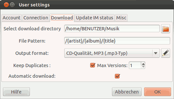
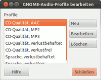
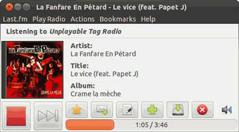

Vagamule
Archivierte Anleitung
Dieser Artikel wurde archiviert, da er - oder Teile daraus - nur noch unter einer älteren Ubuntu-Version nutzbar ist. Diese Anleitung wird vom Wiki-Team weder auf Richtigkeit überprüft noch anderweitig gepflegt. Zusätzlich wurde der Artikel für weitere Änderungen gesperrt.
Anmerkung: Für last.fm nicht mehr verwendbar, zur Nutzung für libre.fm ist Version 0.8.6 notwendig, da passt aber der Patch nicht mehr; zudem kann man die libre.fm-Titel alle über die Downlaod-Funktion herunterladen.
Zum Verständnis dieses Artikels sind folgende Seiten hilfreich:
Vagamule - aus Vagalume und Mule (Maultier), ein verlässliches Arbeitstier, das unermüdlich Songs aus dem Internet zieht...
Diese durch einen Patch von zebob erweiterte Version von Vagalume ermöglicht es, alle gespielten Titel des Service libre.fm  herunterzuladen und die Tracks des .mp3-Streams - auch in unterschiedlichen Formaten (.ogg/oga, .mp4/m4a (AAC) etc.) - zu archivieren. Aufgrund von rechtlichen Bedenken (es scheint in etlichen Ländern nicht legal zu sein, Radio-Streams aus dem Internet mitzuschneiden) hat der Patch keinen Eingang in die "offizielle" Vagalume-Version gefunden. Die Verwendung ist in Deutschland zur privaten Nutzung nach Urhebergesetz §53
herunterzuladen und die Tracks des .mp3-Streams - auch in unterschiedlichen Formaten (.ogg/oga, .mp4/m4a (AAC) etc.) - zu archivieren. Aufgrund von rechtlichen Bedenken (es scheint in etlichen Ländern nicht legal zu sein, Radio-Streams aus dem Internet mitzuschneiden) hat der Patch keinen Eingang in die "offizielle" Vagalume-Version gefunden. Die Verwendung ist in Deutschland zur privaten Nutzung nach Urhebergesetz §53  wohl legal.
wohl legal.
zebob hatte den Patch zunächst für Last-Exit entwickelt, ihn dann recht bald nach Erscheinen von Vagalume (für Version 0.5.1) umgeschrieben; er ist seitdem laufend aktualisiert worden.
Hinweis:
Am 28. April 2014 stellte last.fm seinen Radiodienst ein komplett ein, das Programm ist damit für last.fm obsolet, kann aber für libre.fm weiter verwendet werden.
Installation¶
Es gelten grundsätzlich die selben Grundlagen wie für die offizielle Vagalume-Version. Zur Kompilierung des gepatchten Players müssen ggf. weitere Pakete installiert[1] werden,
automake
build-essential
pkg-config
libtool
libgnome-media-profiles-dev
libgconf2-dev
libglade2-dev
libgnome2-dev
libgtk2.0-dev
libgstreamer0.10-dev
libcurl4-gnutls-dev
libxml2-dev
libnotify-dev
libproxy-dev
intltool
 mit apturl
mit apturl
Paketliste zum Kopieren:
sudo apt-get install automake build-essential pkg-config libtool libgnome-media-profiles-dev libgconf2-dev libglade2-dev libgnome2-dev libgtk2.0-dev libgstreamer0.10-dev libcurl4-gnutls-dev libxml2-dev libnotify-dev libproxy-dev intltool
sudo aptitude install automake build-essential pkg-config libtool libgnome-media-profiles-dev libgconf2-dev libglade2-dev libgnome2-dev libgtk2.0-dev libgstreamer0.10-dev libcurl4-gnutls-dev libxml2-dev libnotify-dev libproxy-dev intltool
Das aktuelle Quellcode-Archiv von Downloadseite  des Projektes, z.B. im Terminal[2] mit
des Projektes, z.B. im Terminal[2] mit
wget http://vagalume.igalia.com/files/source/vagalume-0.8.5.tar.gz
herunterladen und entpacken[3].
Der savesong13-oneiric.patch , und ggf. weitere Patches müssen dann in das vagalume-0.8.5-Verzeichnis kopiert, und dort im Terminal einzeln (und in dieser Reihenfolge!) mit
patch -p1 < 3678747-savesong13-oneiric.patch patch -p1 < 02_volume-bar-085.patch # -> wenn gewünscht, siehe unten patch -p1 < 03_multi-use-085.patch # -> wenn gewünscht, siehe unten
eingespielt werden. Bei der Kompilierung wird zur Konfiguration das autogen.sh-Skript aufgrund der Umstellung auf GTK 3 mit der Option --with-gtk-version=3 aufgerufen:
./autogen.sh --with-gtk-version=3
anschließend kompiliert[4] und installiert (siehe dazu auch im Forum).
Konfiguration¶
Hier gelten zunächst die im Vagalume-Artikel beschriebenen Schritte. Die gepatchte Version stellt allerdings eine enorme Erweiterung des Funktionsumfangs zur Verfügung, im Player-Fenster im Reiter "Last.fm -> Einstellungen -> User settings" erscheinen die weiteren Auswahlmöglichkeiten.
config.xml anpassen¶
Leider wird die Konfigurationsdatei ~/.vagalume/config.xml bei der Neuerstellung der gepatchten Version nicht ordnungsgemäß erstellt. Der Player startet zwar, gibt aber im Terminal zwei Fehlermeldungen aus und lässt sich nach Beenden nicht neu starten, sondern produziert einen Speicherzugriffsfehler. In der Datei muss in einem Editor[5]
<ownb>1</ownb>
nach dem <overwrite>X</overwrite>-Eintrag eingefügt werden. Das funktioniert auch bei laufendem Player (Alternativen auch im Forum.) Eine alte config.xml des gepachten Players in Version 0.7.x sollte aber weiter funktionieren.

Datei- und Ordnernamen¶
Im Eingabe-Fenster "File Pattern" lässt sich der Dateiname aus den Komponenten "{artist}", "{album}" und "{title}" festlegen. Standard bei neu erstelltem Player ist "{artist} - {album} - {title}", möglich ist es auch, direkt hierarchisierte Ordnerstrukturen zu erstellen, in dem die Titel gleich nach Ordner "Künstler", Unterorder "Album" und darin die Titel gespeichert werden, dazu "/{artist}/{album}/{title}" verwenden. Es lassen sich aber auch gleich weitere Ordnerhierarchien anlegen, wie z.B. "/Classic Rock/{artist}/{artist} - {title}".
Erstellung von id3-v2-Tags¶
Es werden automatisch (wenn das gewählte Format es zulässt) ID3-Tags erstellt. Dazu werden die Angaben für den Künstler und den Titel sowie das Album (bei fehlender Angabe [unknown]) in den Tag geschrieben. Weitere Informationen zur Titelnummer, Erscheinungsjahr, Genre etc. werden derzeit nicht verarbeitet. Zu fehlenden Informationen könnten bei Bedarf Seiten wie Discogs oder MusicBrainz sowie Tag-Programme wie EasyTAG oder Audio Tag Tool helfen.

Ausgabeformat der Titel¶
Darunter lässt sich bei "Output format" festlegen, in welchem Format die Dateien gespeichert werden sollen. Vagamule greift dabei auf die Pipelines zurück, die im GNOME-Audio-Profile angelegt sind. So lassen sich alle von Gstreamer unterstützten Formate erstellen, wenn die entsprechenden Codecs installiert sind. Der mp3-Stream wird dabei in das neue Format encodiert, sodass leichte Qualitätsverluste sich dabei nicht vermeiden lassen. Standard-Einstellung bei neu erstelltem Player ist das freie Vorbis/.ogg-Format, möglich sind natürlich auch .mp3, .mp4 (AAC) und andere; für mp4 wird allerdings kein id3-Tag angelegt.
Format-Änderungen werden bei laufendem Player erst mit Archivierung des nächsten Titels wirksam, da das Format der laufenden Aufnahme nicht mehr geändert werden kann. Beim Editieren von Audioprofilen gibt es momentan allerdings Probleme. Bei Bedarf daher ggf. diese Funktion im Terminal mit den Befehl gnome-audio-profiles-properties aufrufen.
Eine Auswahl an Konfigurationen für die GStreamer-Pipelines (je nach installierten GStreamer-Paketen), Näheres ggf. bei Sound_Juicer:
| Formate | |
| Kürzel | Angabe zur GStreamer-Weiterleitung |
| Vorbis/.ogg | audio/x-raw-float,rate=44100,channels=2 ! vorbisenc name=enc quality=0.5 ! oggmux |
| .flac | audio/x-raw-int,rate=44100,channels=2 ! flacenc name=enc" |
| .wav | audio/x-raw-int,rate=44100,channels=2 ! wavenc name=enc |
| .spx | speexenc name=enc ! oggmux |
| AAC/.mp4/.m4a | audio/x-raw-int,rate=44100,channels=2 ! faac ! ffmux_mp4 |
| .mp3 | audio/x-raw-int,rate=44100,channels=2 ! lame name=enc mode=0 vbr-quality=6 ! id3v2mux |
Da allerdings der Stream meist auf 128 kbps in CBR-Qualität basiert, ist eine "höherwertige" Encodierung nicht sinnvoll; für die gelieferte Qualität ist diese Einstellung daher voll ausreichend:
audio/x-raw-int,rate=44100,channels=2 ! lame name=enc vbr=0 bitrate=128 ! id3v2mux
Umgang mit bestehenden Dateinamen¶
Die Checkbox "Keep Duplicates" aktiviert einen Modus, mit dem ggf. bestehende Dateien im Download-Verzeichnis nicht überschrieben werden; wenn angeklickt lässt sich dann festlegen, wie viele Versionen einer Titels mit bereits vergebenem Dateinamen erstellt werden sollen. Die Angabe "1" führt dazu, dass bei vergebenem Namen der Titel verworfen wird; "2" und mehr führt zur Abspeicherung des Titels mit der Erweiterung NAME(version 2) etc., bis zu 255 Versionen sind möglich. Das ist insbesondere dann von Nutzen, wenn die Titel direkt in ein bestehendes Verzeichnis archiviert werden und unter dem Namen bereits andere Versionen des Songs (ungekennzeichnete Live-Versionen, unplugged etc.) vorhanden sein könnten. Gerade beim Abspeichern in der MP3-Player-kompatiblen Form "{artist} - {title}" kann es leicht zu mehrfacher Verwendung des selben Namens für unterschiedliche Tracks kommen.
Aufnahmemodus¶
Ebenso kann festgelegt werden, ob Vagamule alle wiedergegebenen Titel automatisch speichern soll ("Automatic download"), oder der momentan wiedergegebene Titel erst per Knopfdruck gespeichert wird.
Auf die in der Original-Version mit dem "Titel herunterladen"-Knopf verbundene Funktion, frei zugängliche .mp3-Dateien herunterzuladen, verzichtet die gepatchte Version zugunsten der Archivier-Funktion; die Verwendung speichert den momentan wiedergegebenen Titel, wenn nicht die automatische Aufnahme gewählt wurde, in das in den Benutzereinstellungen angegebene Download-Verzeichnis. Die Schaltfläche wird mit Betätigung bis zum Start des nächsten Track oder nochmaligem Anklicken als "aktiviert" dargestellt (das ist allerdings je nach verwendetem Design ggf. schwierig zu erkennen). Die Aufnahme lässt sich während der ganzen Wiedergabezeit für den kompletten Titel aktivieren und auch wieder rückgängig machen, wenn man es sich doch anders überlegt hat. Vagamule legt jeden Track in der Datei vagalume-BENUTZERNAME im /tmp-Verzeichnis ab, die dann, wenn gewünscht, im angegebenen Namensschema endgültig gespeichert wird - ansonsten wird sie für den nächsten Track sofort wieder überschrieben. Auch während der Aufnahme kann der " Diesen Titel überspringen"- oder " Wiedergabe stoppen"-Button betätigt werden; Vagamule speichert einen Titel nur dann endgültig ab, wenn er vollständig heruntergeladen ist.
Diesen Titel überspringen"- oder " Wiedergabe stoppen"-Button betätigt werden; Vagamule speichert einen Titel nur dann endgültig ab, wenn er vollständig heruntergeladen ist.
Der zur Speicherung verwendete Datenträger sollte möglichst ext2/ext3-formatiert sein, da bestimmte Zeichen wie "]" oder ":" in Dateinamen von FAT/NFTS-formatierten Datenträgern ggf. nicht akzeptiert und folglich Tracks mit solchen Zeichen nicht gespeichert werden können. Beim Abspeichern der Dateien wird nicht überprüft, ob der Träger auch noch genügend Kapazität hat; hier sollte man großzügig sein, denn die Erfahrung lehrt, dass auf diesem Wege schnell recht große Sammlungen zustande kommen. Auch wer z.B. seinen MP3-Player oder USB-Stick "volllaufen" lassen will, sollte diese Hinweise beachten.
Weitere Patches¶
Für Vagamule existiert ein ursprünglich von mtron implementierter Patch, der einen Lautstärkeregler in das Bedienfenster integriert. Auch lässt sich der Player mit einem kleinen Patch auf Wunsch in mehreren Instanzen gleichzeitig verwenden. Dazu kann der Quellcode durch nachfolgende Patches erweitert werden.

02_volume-bar-085.patch¶
Dieser Patch integriert einen Lautstärkeregler rechts unten in das Playerfenster; allerdings ist keine Bedienung über das Tray-Icon-Menü möglich. Damit lässt sich die Player-Lautstärke individuell anpassen oder auch ganz abschalten. Das Paket libgstreamer-plugins-base0.10-dev darf bei der Kompilierung nicht installiert sein, ansonsten gibt es Probleme mit der systemweiten Lautstärkeregelung! Beim ersten Titelwechsel wird die eingestellte Lautstärke ggf. wieder auf 100% hochgeregelt, später bleibt die eingestellte Lautstärke erhalten; ein stummgeschalteter Player bleibt allerdings auch stumm.
03_multi-use-085.patch¶
Ein kleiner Patch , der es ermöglicht, Vagamule in mehreren Instanzen gleichzeitig laufen zu lassen. Zusammen mit dem Lautstärke-Regler ist es damit möglich, mit zwei (oder mehreren) Accounts zwei (oder auch mehrere) Player gleichzeitig laufen zu lassen, und dabei einen anzuhören, den/die anderen stumm zu schalten. Zum Aufnehmen sind aber unbedingt verschiedene Accounts nötig; wenn zwei Anwendungen (egal welche) gleichzeitig über den selben Account auf die Wiedergabe zugreifen, sind Probleme vorprogrammiert! Die Temporär-Dateien werden bei Verwendung des Patches als vagalume-"libre.fm-BENUTZER"-Datei im /tmp-Verzeichnis angelegt, sodass für jeden verwendeten Account eine eigene Datei entsteht. In der ~/.vagalume/config.xml-Datei werden allerdings nur die Benutzer-Daten der zuletzt aufgerufenen Playerinstanz gespeichert. Allerdings kann es, wohl aufgrund der Nutzung der gemeinsamen config.xml, hier vermehrt zu Speicherzugriffsfehlern kommen, die den Player zum Absturz bringen, insbesondere wenn versucht wird, unterschiedliche Einstellungen in den Instanzen zuverwenden!. Es wurden vereinzelt auch nicht geklärte Dauer-Vollauslastungen der CPU bzw. einzelner Kerne beobachtet.
Die Patches 02 und 03 funktionieren nur in Verbindung mit dem savesongXX.patch, der immer zuerst eingespielt werden muss. Der 03_multi-use-085.patch lässt sich theoretisch auch ohne den 02_volume-bar-085.patch verwenden.
Vagamule unbeaufsichtigt betreiben¶
Wer Vagamule "unbeaufsichtig" verwenden möchte, kann diesen WatchDog verwenden - ein Python-Skript, das Grek336 entwickelt hat. Der Wachhund sorgt dafür, dass bei ungewollten Abbrüche, Fehlern etc. das Programm automatisch beendet und dann mit dem selben Sender neu gestartet wird. Dazu wird die Temporärdatei /tmp/vagalume-BENUTZERNAME in regelmäßigen Abständen auf Veränderung überwacht; bei Stillstand tritt der Wachhund dann in Aktion. Das funktioniert nicht für das "regulären" Vagalume, da dort keine Temporärdatei existiert. Auch die Nutzung in mehreren Instanzen ist damit nicht möglich, da bei einem Neustart die letzten Werte aus der config.xml verwendet werden, und so über kurz oder lang zwei Instanzen - erfolglos - versuchen, sich auf das selbe Benutzerkonto einzuloggen. Damit bricht der Zugriff ab, ggf. werden dann Songs unvollständig, mit falschen Namen oder id3-Tags abgespeichert.
Das Skript herunterladen und ausführbar machen; es wird mit den Parametern für das Programm, den Sender, die zu überwachende Datei sowie optional mit dem Sekunden-Wert für das Überwachungsintervall gestartet, also z.B.
/PFAD/ZUM/WatchDog5.py "vagalume" "libre.fm://SENDERNAME" "/tmp/vagalume-<BENUTZERNAME> 45
Wenn der letzte Wert weggelassen wird, sind 60 Sekunden das Standard-Intervall. Das Skript startet beim Aufruf allerdings auch erst mit dieser Verzögerung! Wer sowieso immer den selben Sender verwendet, kann sich einen entsprechenden Starter im Hauptmenü erstellen.
Probleme¶
Das Editieren der GNOME-Audio-Profiles ("Einstellungen -> Download -> Outputformat", Schaltfläche mit dem Bleistiftsymbol rechts) führt zu einem Fehler, der den Player zum Absturz bringt:
(vagalume:2553): Gtk-CRITICAL **: gtk_tree_model_get: assertion `GTK_IS_TREE_MODEL (tree_model)' failed (vagalume:2553): GLib-GObject-CRITICAL **: g_object_unref: assertion `G_IS_OBJECT (object)' failed
Die Änderung wird zwar zuvor abgespeichert, man sollte diese Funktion aber nicht bei laufender Wiedergabe betätigen. Außerdem springt dabei die gewählte Einstellung auf den ersten möglichen Eintrag zurück, daher die Einstellung bei Neuaufruf nochmals prüfen.
Ausblick¶
Die Weiterentwicklung der "Vagamule"-Version stagnierte seit Einführung der Bezahlpflicht für last.fm-Benutzer außerhalb der USA, GB und D. mtron hat auf seiner Hompage Homepage die "alten" 0.7.1-Versionen zu "Archivzwecken" eingestellt, arbeitet aber nicht mehr an der Weiterentwicklung. Für Vagalume 0.8.5 existiert inzwischen die im Artikel beschriebene Anpassung des Save-Song-Patches. Allerdings läuft der Player damit ggf. nicht reibungslos, es kommt hin und wieder zu Speicherzugriffsfehlern. "Abhilfe" kann die Verwendung des oben beschriebenen WatchDog-Skripts schaffen.
- Erstellt mit Inyoka
-
 2004 – 2017 ubuntuusers.de • Einige Rechte vorbehalten
2004 – 2017 ubuntuusers.de • Einige Rechte vorbehalten
Lizenz • Kontakt • Datenschutz • Impressum • Serverstatus -
Serverhousing gespendet von